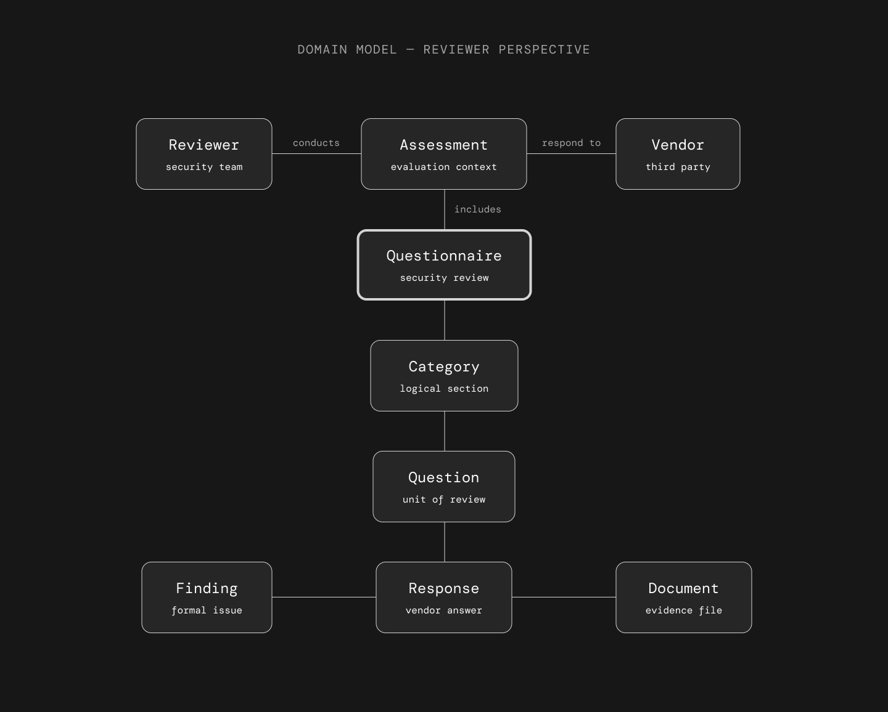
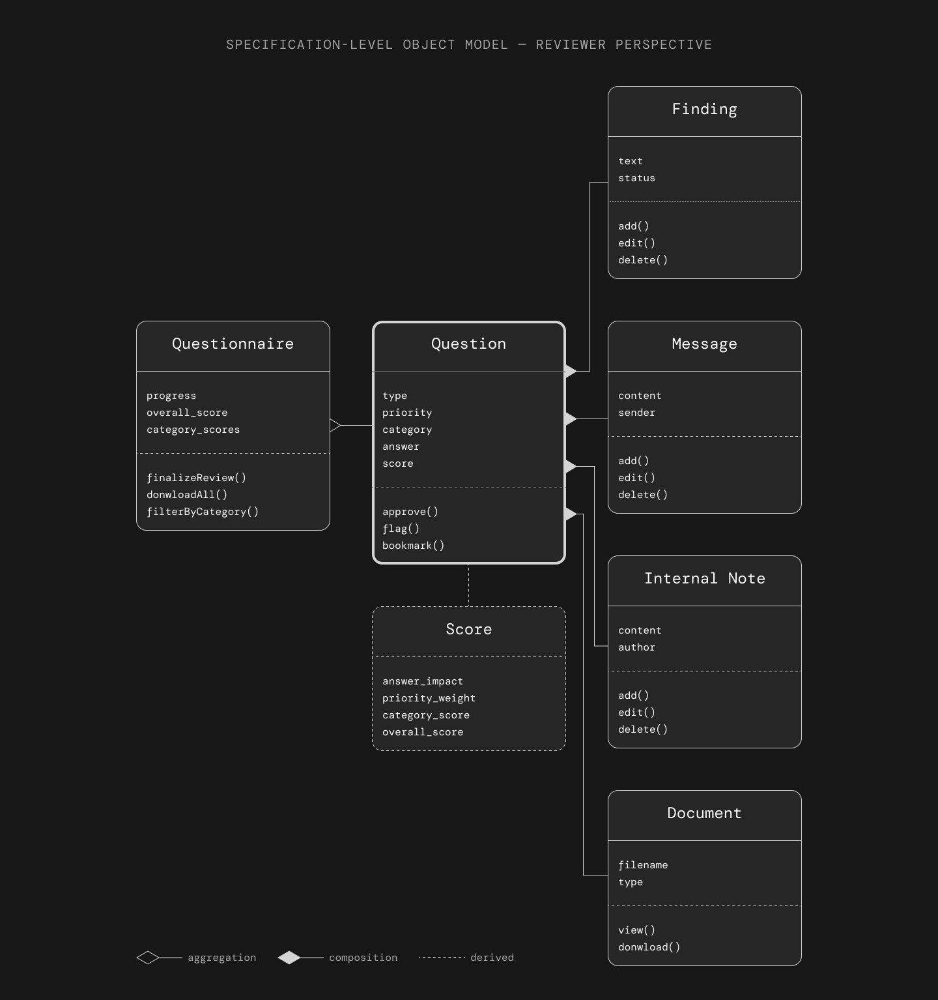
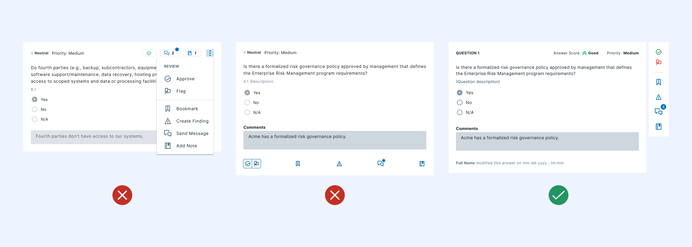
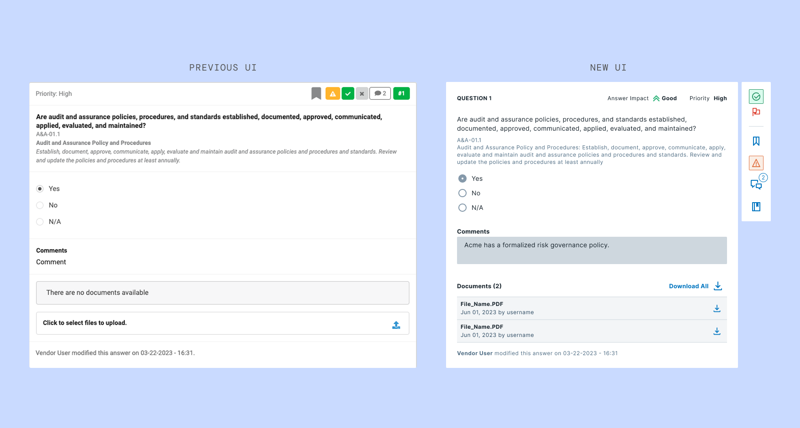
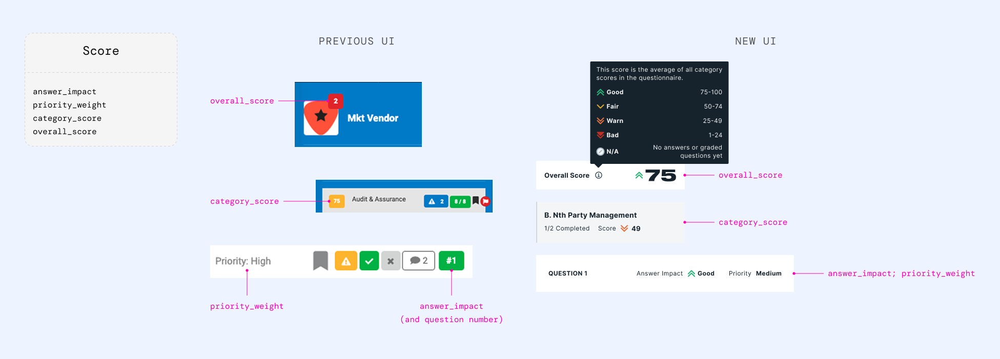
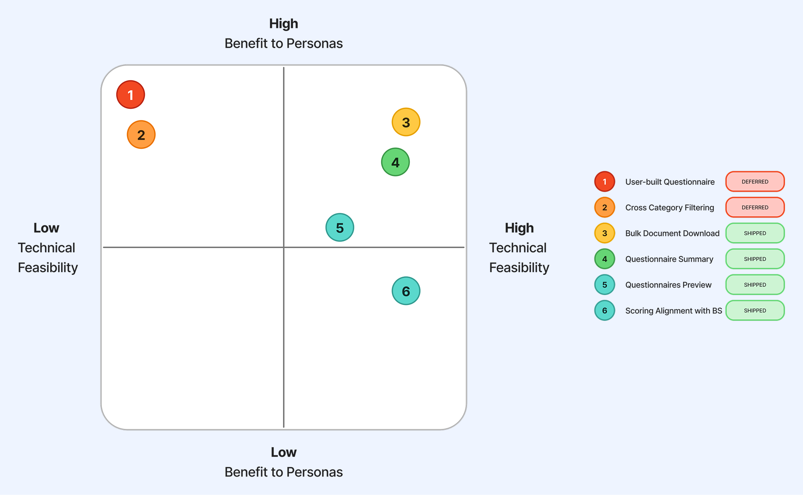
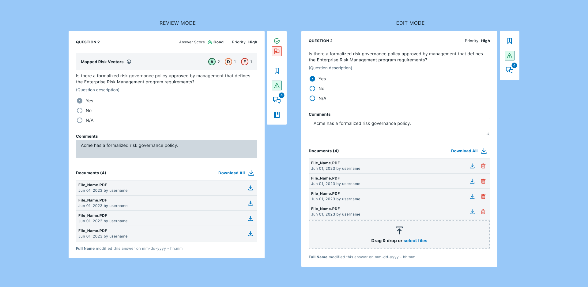
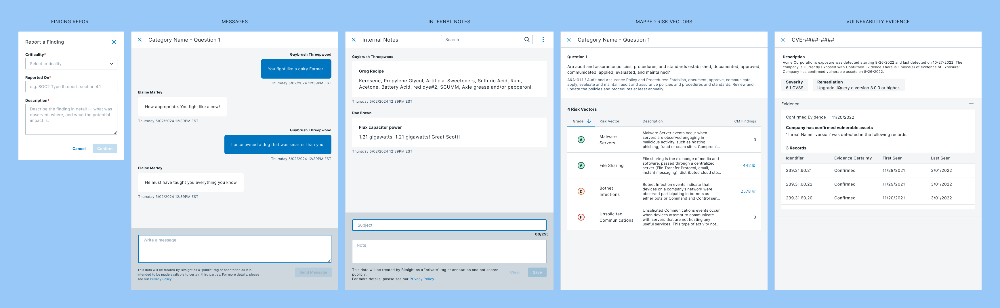

After Bitsight acquired ThirdPartyTrust, the questionnaire feature needed more than a visual refresh. It needed a new foundation. I led the UI redesign and research plan for a complex, high-stakes workflow used by security teams every day.
A feature inherited from an acquisition
In Q3 2022, Bitsight acquired ThirdPartyTrust, a vendor risk management platform with its own established product and user base. As part of the integration, the Questionnaires feature needed to be rebuilt inside Bitsight's product ecosystem: redesigned from scratch using the Bitsight Design System, with better accessibility, clearer usability, and feature parity with the original.
Questionnaires are central to how security teams manage vendor risk. They come in three forms: custom questionnaires built by the team for specific assessments, internal questionnaires used for scoping during vendor intake and reassessment cycles, and industry-standard templates like CAIQ v4, ISO 27001:2022, and SIG Core.
This wasn't a greenfield project. It was a migration with real users watching. The design had to earn trust from people who already had a workflow, muscle memory, and strong opinions about how the tool should behave.
Feature parity isn't enough: it has to be better
The original platform had been built using its own framework, before any design system existed. Visual inconsistencies were everywhere, accessibility was not a priority, and some workflows required too many steps to accomplish basic tasks. At the same time, users had deep familiarity with the old interface. Every change needed a reason strong enough to justify the disruption.
The challenge had three parts. First, align the interface with Bitsight's design system without losing the features users depended on. Second, improve usability and accessibility across a complex, multi-part workflow. Third, do it iteratively: delivering features in planned cycles while the product was already in use.
Iterating toward the right answer
The design process started with a complete inventory of the existing platform, followed by the first designs and user flows built on the Bitsight DS. Each iteration was scoped to a set of features that could be shipped independently, which meant making early decisions about what to finalize and what to keep flexible as we learned more.
Feature inventory first
Before starting any new designs, I ran a complete inventory of the existing platform: every feature, every interaction state, every edge case. Because there was no formal documentation of the original product, this was essentially reverse engineering: mapping the live system from scratch to understand what the new design had to account for. It gave the team a shared map of what existed and revealed several features that had no clear home in the new layout.

The existing ThirdPartyTrust questionnaire interface, captured during the feature inventory audit before the redesign began.
Mapping the domain before the UI
The feature inventory revealed something deeper than a list of things to build: the questionnaire had no clear conceptual model from the reviewer's perspective. Features had accumulated over years without a shared understanding of what objects reviewers were actually working with.
Before sketching any screens, I mapped the domain: identifying the core objects, their attributes, and the operations reviewers performed on them. The model came from a deduction of the old platform: what existed, what was missing, and what relationships the new system had to support.

Domain-level object model deduced from the existing platform, mapping the core entities, attributes, and relationships the new design had to account for.
The analysis surfaced one key insight: Question is the unit of work, not the Questionnaire. Reviewers think and act at the question level: they flag, approve, annotate, and download one question at a time. The Questionnaire is a container; the Question is where decisions happen. This single observation explained why the toolbar needed to be scoped to the question, not the page.

Six core objects from the reviewer's perspective. The Questionnaire is a container; the Question is the unit of work.
Three distinct objects handle communication per question: Finding (formal, visible to the vendor, permanent record), Message (async thread with the vendor, scoped to the question), and Internal Note (private to the review team, never shared). Keeping them separate was a deliberate design decision. The domain model also shaped how the research tasks were written: tasks like "go to vendor X → open questionnaire Y → flag question N → create a finding" trace the exact path through the object hierarchy, which is part of why participants navigated the test naturally.
Question tools: the hardest interaction design problem
Each question in a questionnaire can have up to five independent tools associated with it: review (approve or flag), bookmark, finding creation, messaging, and internal notes. In the old platform, these were scattered and inconsistently placed. Users had to hunt for them.
I explored several layout approaches before landing on a solution. The key tension was between discoverability (making tools visible enough that users knew they existed) and density (keeping the question interface readable when dozens of questions are stacked in sequence).

Three layout proposals for question-level tools. The vertical rail balanced visibility with density and became the foundation for the final design.
The chosen solution, a vertical action rail anchored to each question, kept tools consistently reachable without competing with question content. Actions are always in the same place, regardless of question length or answer type.

Before and after comparison of the questionnaire UI
Tool rail scrolling behavior
Surfacing the score without exposing the formula
The scoring system calculated risk from three inputs: answer value, question priority, and category weight, combined into an overall score. The result was always visible, fixed in the questionnaire header. The challenge was legibility: reviewers couldn't link what they saw on screen back to those inputs. The score felt like a black box, not a signal.
The solution was to show everything related to the score in one unified visual, which let reviewers intuitively understand what was driving the number.
The score uses a five-state icon + color system (Good, Fair, Warn, Bad, and N/A) adopted from the Bitsight DS, which had moved from a color-only scale to icon + color. This improved accessibility and kept the feature visually consistent with the rest of the product. At the category and questionnaire level the score becomes numerical, paired with the same icon, so reviewers can compare categories at a glance.

Score at question level (qualitative) vs. questionnaire level (numerical)
Two studies, two different angles
With the initial designs and user flows built on the Bitsight DS, I ran two research studies to validate the direction and surface friction before full delivery. The goal was to test with real users while also getting structured expert feedback early, catching issues at both ends of the process.
The ThirdPartyTrust workflows weren't familiar to Bitsight employees, so before testing with real users, we ran a structured heuristic review with internal stakeholders first. PURE (Practical Usability Rating by Experts) uses a defined set of criteria to surface usability issues before external testing, faster and cheaper than waiting for real users to find them.
Sessions with existing users of the ThirdPartyTrust platform. Participants completed representative tasks using the new design and verbalized their reactions. Primary metrics: task success rate, time on task, error patterns, and qualitative feedback.
What we found
The usability test results were encouraging: participants completed all tasks successfully and responded positively to the new interface. One of the most common reactions was around the question tools: the actions were clearer and easier to reach than in the original product.
- All tasks completed successfully. Existing users navigated the redesigned interface without significant errors. The general reaction was that actions felt "more clear and easy to use."
- Bulk document download. Users needed to download all documents from a questionnaire at once, but the system required them to do it one by one, per question. A recurring and painful friction point.
- Cross-category filtering. Categories were rendered client-side, which limited filtering to within each category. Users expected to filter across the full questionnaire, a structural constraint from engineering, not design.
- User-built questionnaires. Users wanted to build questionnaires themselves. In the current state, questionnaires were created on demand by the Customer Success team, a bottleneck users found frustrating.
The last two pain points were highly requested, but low feasibility for engineering at that stage. They went into the backlog with clear rationale.

Prioritization matrix showing impact versus feasibility
A complex feature, delivered in pieces that held together
The redesign shipped progressively across planned delivery cycles. Each iteration was tested or reviewed before the next began. Problems were caught early, not after everything was built.
Light and dark themes, ready at launch
Because this project ran in parallel with the design token adoption work, the questionnaire became one of the first features to be fully tokenized. Every component in the redesign referenced semantic tokens, which meant both light and dark mode were supported from the start, with no separate design files and no duplication.

Light and dark mode, ready at launch. Both themes came with the token system decision, not as extra design work.
Collaboration with the vendor-side team
The questionnaire feature has two sides: the reviewer experience (what security teams see) and the respondent experience (what vendors see). I was on the VRM team, responsible for the reviewer UI, and collaborated closely with the TMH team who owned the vendor-facing design. That collaboration worked as well as it did because I carried product context forward from the original ThirdPartyTrust platform, before the acquisition split reviewer and vendor experiences into two separate teams. Keeping both sides consistent required ongoing alignment: shared components, shared tokens, and regular cross-team reviews.

Categories panel in review mode and edit mode.

Question cards in review mode and edit mode.

Action sheets and dialogs for question management.
Results
- Two research studies, a complete feature redesign, and a set of reusable components were delivered.
- The usability test validated the core direction: all tasks were completed successfully, and participants responded positively to the new tool layout.
- The pain points surfaced in research were documented, triaged, and communicated to the product team with clear feasibility context.
The questionnaire redesign in action
Validation in the wild
After all designs were delivered to production, the product team ran a pilot program with both new and existing customers during the platform's unification phase. Legacy customers accessed VRM Beta for a preview and feedback gathering. New customers enrolled directly in the VRM Beta Pilot Program.
- Confirm Bitsight VRM's value proposition by asking users whether the product was delivering according to their expectations
- Test and learn for continuous improvement: gathering feedback on usability, functionality, and overall experience
- Continue promoting Bitsight VRM to new customers while existing customers remained on the legacy platform
I didn't run the pilot program, but having that kind of feedback from a live platform, from real customers using the feature in production, was a meaningful signal that the design direction held up beyond the controlled conditions of usability testing.
What this project taught me
I learned how expensive it is to work without documentation. Building the feature inventory meant reverse engineering the whole product from scratch, and that took real time I wouldn't have needed if documentation had existed from the start. Now I try to document as I go, even when nobody asks for it, so whoever picks up the work next doesn't have to start from zero.
Running the PURE evaluation first caught structural issues before any user even saw the design. Then the usability test showed me what actually held up, plus friction I never would have caught on my own. Doing both made conversations about priorities with the product team so much easier, because I wasn't guessing which issues mattered most.
Scope cuts change what you can honestly claim. The bigger review-time win was always tied to custom questionnaires and questionnaire-level filtering, letting reviewers build the exact set of questions a vendor needed and jump straight to what mattered instead of paging through everything in order. Both got scoped out of this phase, so the redesign improved review time without fully solving it. If I went back, I'd push harder to keep filtering in scope, since it's the piece closest to reviewers' actual bottleneck.